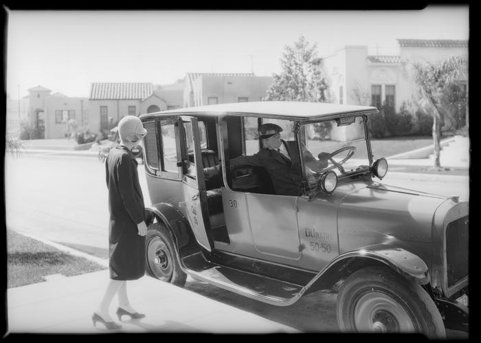
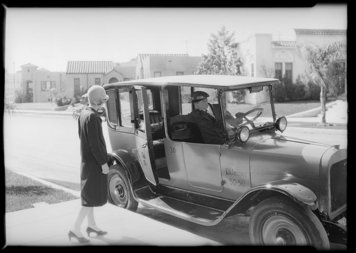
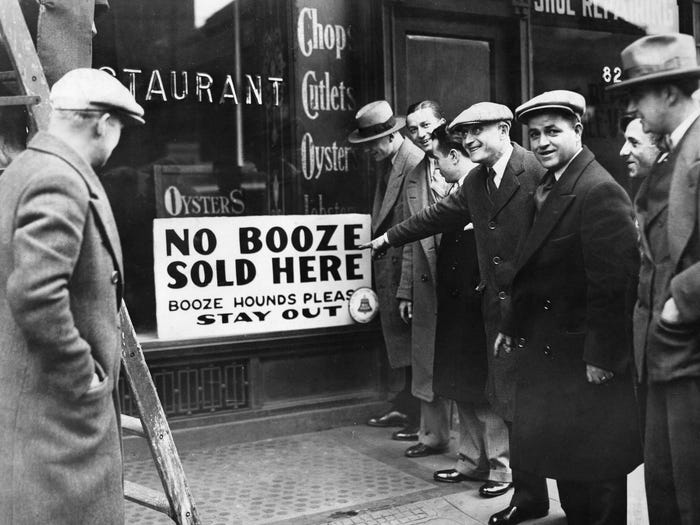
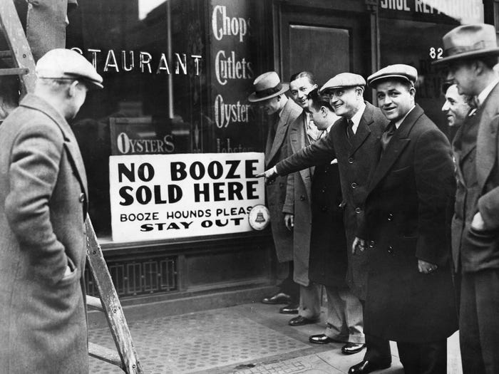
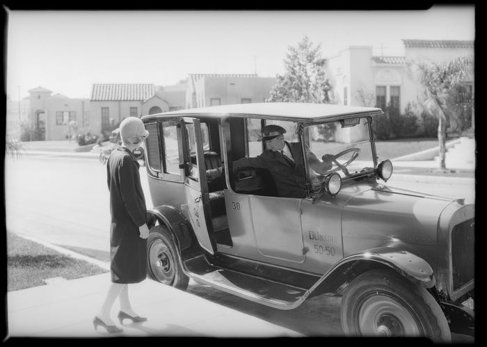
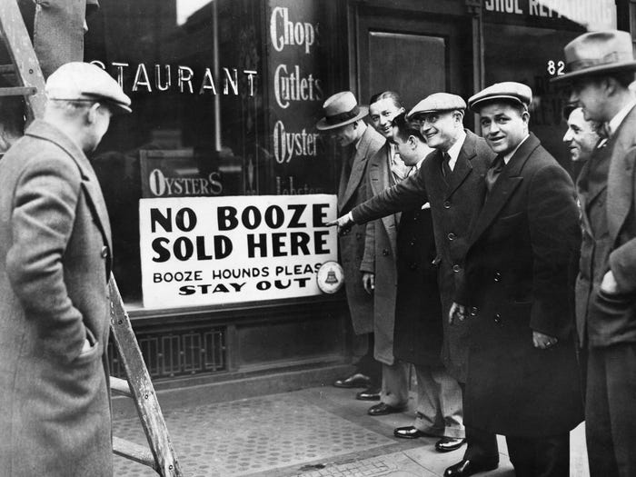

 

During The Roaring 20s, clothing fashions changed a lot. The new fashion trend was all about letting loose. Women would wear dresses everyday with each dress changing for a particular occaision or even for the time of day. During the day, dresses had sleeves with a straight, pleated, hank hem, or tiered skirt. One of the main accessories worn in the 20s was the Cloche Hat.
The term Jazz Age was created by F. Scott Fitzgerald to show the popularity of jazz music during The Roaring 20s. The popularity of jazz music brought the need to dance which also brought the need for new clothing to make dancing easier. Dances like the Black Bottom and the Charleston required a change in women's clothing fashions due to the lively manner of the jazz dances. So dress and skirt hems became shorter which allowed the body to move much more easily. Jazz became so popular that it also influenced textiles. A lot of textile patterns that were produced in the United States incorporated images of people dancing to jazz and jazz bands.
Prohibition was the 18th Amendment to the U.S Constitution which banned the manufacture, transportation, and sale of alcohol. It was ratified in 1919 and officially went into effect. The support for ending Prohibition by the end of the 1920s was brought up due to the increasing amount of gang violence and speakeasies. In 1933, a resolution was adopted which proposed the 21st Amendment that would repeal the 18th. This Amendment was ratified on December 5, 1933, ending Prohibition.
Prohibition wasn't the only source of social tension during The Roaring 20s. The Great Migration of African Americans from Southern countryside to Northern cities discomfited some white Amercians. This lead to millions of people in places such as Illinois or Indiana joining the Ku Klux Klan. In 1919, an anti-Communist "Red Scare" encouraged a widespread anti-immigrant hysteria which lead to the passing of an extremely restrictive immigration law. These conflicts are known as the cultural Civil War between city dwellers and small town residents.

